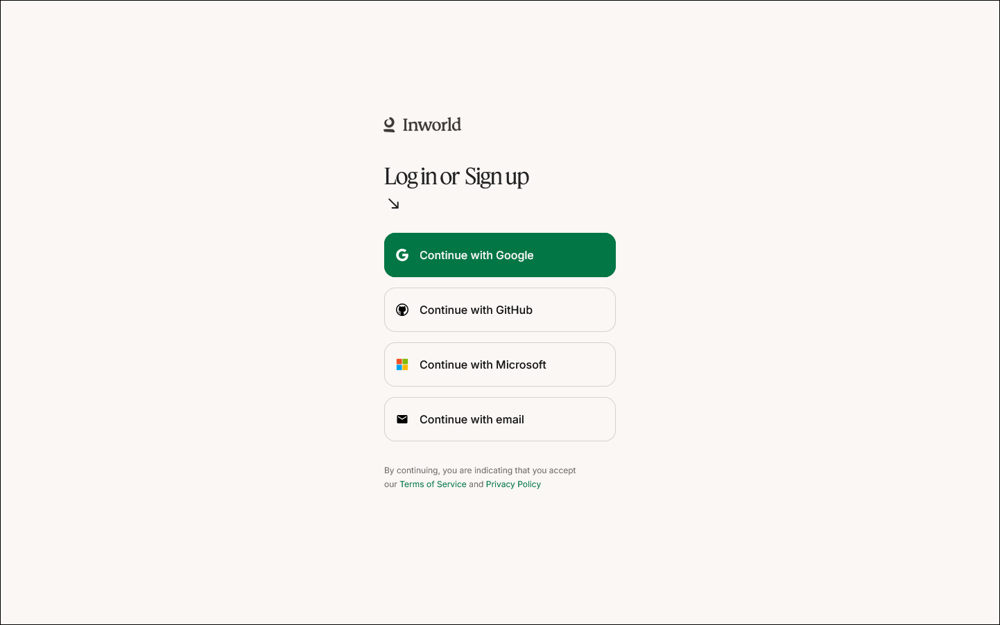
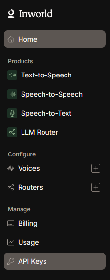
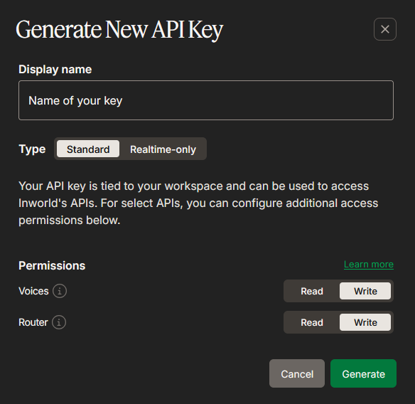

Dubbing / 音声合成
ElevenLabs TTSでは、前述のものと同じElevenLabsキーを使用します。キーに制限が設定されている場合は、Text to Speech: Access権限が必要です。ElevenLabsのボイスクローニングオプション（Instant Voice Cloning、有料のElevenLabsプラン）を使用するには、Voices権限の書き込みアクセスも必要です。これにより、SubVox Proがクローンの作成、検索、削除を行えます。Gemini TTSでは、翻訳と同じGeminiキーを使用します（Google (Gemini)を参照）。以下で説明するGoogle Cloud Text-to-SpeechのGeminiボイスとは異なり、 OAuthも請求先アカウントも必要ありません。OpenAI TTSでは、翻訳と同じOpenAIキーを使用します（ OpenAIを参照）。InWorld専用の設定手順は以下のとおりです。
InWorld AI
用途：翻訳されたトラック用の吹き替え音声（TTS）の生成。
1 Inworld Studio（https://studio.inworld.ai）にアクセスし、アカウントを作成します。

2 ワークスペースの左サイドバーからAPI Keysを開きます。

3 Generate new keyをクリックします。

4 キーに識別しやすい表示名を付けます。リアルタイム専用のキーが特に必要な場合を除き、Standardを選択し、Inworld TTSのワークフローに必要な権限を維持します。

5 Basic (Base64)のキー値をコピーします。

キーはAPI Keysの一覧にも表示されるため、必要に応じて後から再度コピーできます。

6 SubVox Pro（Settings ▸ InWorld）に貼り付けます。
Freeプランには、1回限り（one-time）の約70分間のTTS利用枠と商用ライセンスが含まれます。 TTS Playgroundで、先にボイスを試聴できます。入門ドキュメント： https://docs.inworld.ai/docs/tts-api/getting-started/
Google Cloud Text-to-Speech
用途：翻訳されたトラック用の吹き替え音声（TTS）の生成。2つのボイスファミリーが1つの接続を共有します。Cloud Text-to-Speech APIを使用するClassicボイス（Standard、WaveNet、Neural2、Chirp/Chirp3-HD）と、多言語に対応し、自由形式のスタイル指示を受け付けるGeminiボイス（Leda、Achird、Aoedeなどの名前を持つ事前定義のボイス）です。 Geminiボイスは、別のVertex AI APIを使用します。
他のプロバイダーとは異なり、Google Cloud TTSではAPIキーではなくOAuthサインインを使用します。Gemini
ボイスが利用するVertex AIでは、IAMによってアクセスが制御されているためです（aiplatform.endpoints.predict）。APIキーには
IAM権限がありませんが、サインインしたGoogleアカウントには、プロジェクトの所有権または編集権限があればIAM権限があります。1回のサインインで両方のボイスファミリーを利用できます。
- https://console.cloud.google.comでGoogle Cloud Consoleを開き、プロジェクトを作成（または選択）します。新規アカウントには$300のトライアルクレジット（90日間）が付与されます。無料枠のみを使用する場合でも、請求先アカウントが必要です。
- APIs & Services ▸ Libraryで、Cloud Text-to-Speech API（Classicボイス）を有効にし、
Geminiボイスを使用する場合は、Vertex AI API（
aiplatform.googleapis.com）も有効にします。従来の「AI Platform」（ml.googleapis.com）ではありません。Classicボイスのみが必要な場合は、Vertex AIを有効にする必要はありません。 - APIs & Services ▸ OAuth consent screen： User type / AudienceをExternalに設定します（Internalでは、個人のGmailアカウントが
403: org_internalエラーでブロックされます）。また、Test usersに自分のGoogleアカウントを追加します。 - APIs & Services ▸ Credentials ▸ Create credentials ▸ OAuth client IDで、アプリケーションの種類にDesktop
appを選択します。Client IDとClient secretをコピーします。（
http://127.0.0.1を使用するループバックサインインには、Desktopクライアントが必要です。Google Sheetsとの連携でも同様です。） - SubVox ProでText-to-Speechタブを開き、Google Cloudを選択して、Client IDと Client secretを貼り付けます。続いてConnect…をクリックし、ブラウザでサインインします。「app not verified」 という警告が表示されたら（Testingモードでは通常の表示です）、Continueを選択します。（課金とクォータの対象となるプロジェクトは Client IDから特定されるため、ほかに入力する項目はありません。）認証情報とリフレッシュトークンは、このコンピューターの Editorの環境設定に保存され、プロジェクトには保存されません。
続いてボイスを選択します。ClassicボイスはTier Leaf (locale)の形式で表示されます（例：Neural2 A (fr-FR)）。Geminiボイスは
Name · Geminiの形式で表示され、languageフィルターの設定は適用されません（対応しているすべての言語で発話できます）。
Geminiボイスを選択すると、ボイスの演技指示ボタン（ボイス選択欄の横にある吹き出しアイコン）が有効になります。*「ひどく悲しんでいて、精神的に崩れそうな状態」*のような口調の指示を入力すると、各行に対するGeminiのスタイル指示として送信されます。
Billingに関する注意：Classicボイスは、Cloud Text-to-Speechの月間無料クォータ（ Neural2/WaveNetは約100万文字、Standardは400万文字）を消費します。GeminiおよびChirpのボイスはVertex AI経由で課金され、料金が異なります。予算アラートを設定してください。TTSの料金：https://cloud.google.com/text-to-speech/pricing
Azure AI Speech
用途：高品質な多言語ニューラルボイスによる、翻訳されたトラック用の吹き替え音声（TTS）の生成。サブスクリプションキー + リージョンを使用します（OAuthは不要です）。
https://azure.microsoft.com/freeでMicrosoft Azureアカウントを作成します。Azureでは、本人確認のためにクレジットカード情報の入力が求められますが、Speechの無料枠（F0）は完全に無料のSKUです（課金する代わりに利用量に上限が設けられます）。そのため、F0ではカードへの請求は発生しません。
Azure Portal（https://portal.azure.com）で、Create a resourceをクリックし、Speechを検索します。 Microsoftが公開しているSpeechというタイルを選択します（Createボタンが付いています。Subscribeと表示されるサードパーティのMarketplaceのオファーではありません）。Createをクリックし、サブスクリプションとリソースグループ、Region（覚えておいてください）、名前、Pricing tier F0 (free)を選択します。 Review + createをクリックします。
適切なリソースへの直接リンク：https://portal.azure.com/#create/Microsoft.CognitiveServicesSpeechServices
デプロイが完了したら、リソースを開き、Keys and Endpointに移動します。KEY 1をコピーし、 Location/Regionの値（例：
westeurope）を控えます。キーをSubVox Pro（Settings ▸ Azure Speech）に貼り付けます。続いて、Text-to-Speechタブで Azureを選択し、ドロップダウンから同じRegionを選択します。
キーとリージョンは、同じSpeechリソースのものである必要があります。一致しない場合、Azureは
401エラーでリクエストを拒否します。リージョンは、ドロップダウンから選択する短い識別子（westeurope、eastusなど）であり、表示名（「West Europe」）ではありません。
無料枠（F0）：ニューラルTTSを月に約50万文字まで利用できますが、評価目的に限られます。Microsoftが生成音声の商用利用権を付与するのは、有料（S0）リソースの場合のみです。公開するゲームの吹き替えを作成する前に、リソースをS0に変更してください。料金：https://azure.microsoft.com/pricing/details/cognitive-services/speech-services/